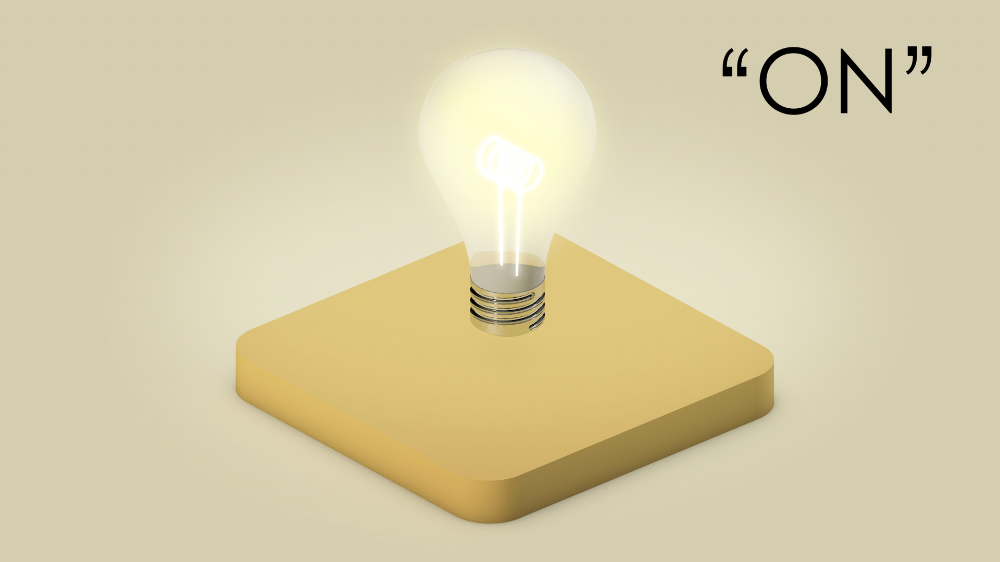
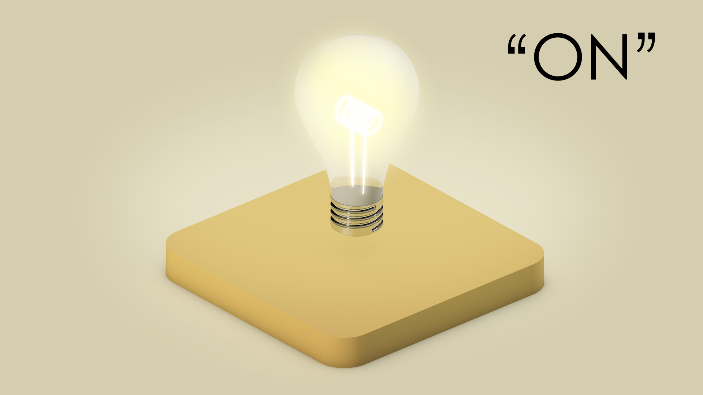

Chapter 2: Dynamical systems#
2.1. Introduction#
Kiki and Bouba are great friends but are quite different characters! It is fun when they meet because Kiki is highly excitable and Bouba prefers to be on the grumpy side! However, they get along with each other quite well! Would it not be interesting to visualize how their mood levels change as they interact?! That is what this chapter is about – visualizing Kiki and Bouba mood levels when they interact using the tools we built in the last chapter!

2.2. Making graphs dynamical#
[Message: Graphs are animated when we add “states” to vertices and “update rules” to evolve the states. Simplistically, dynamical systems are animated graphs.]
We start with directed graphs. Each one of the directed graphs we met in the last chapter, “Whose turn is it to do dishes”, or the “Ski trip brochure”, or “Mythological romance”, is a blueprint of situations happening over time.
For example, here are few situations based on the “Ski trip brochure”:
Situation 1: A person was at the lodge. They took the lift up the mountain and skied downhill to the village.
Situation 2: A person was the village. The cross-country skiied in the village.
We can manifest these blueprints (directed graphs) into actual occurences by bringing these graphs to life! This means that we can feed the graphs to a computer, and with some additional information, the computer can simulate events indicated by these graphs. These events can be simulated as occuring over a period of time (Kiki and Bouba talking for 60 minutes) or can be simulated as occuring over discrete time steps.
Key point
The additional information has two pieces – for every vertex,
One or more states
Update rule for each state
We will start with a very simple example, and see show to apply these two pieces of information to a directed graph and simulate an event or dynamics in a computer!
2.3. Light bulbs#
Let’s start with a light bulb (what could be simpler?!).
2.3.1. Single light bulb#
We can model a light bulb using a directed graph with a single vertex and no edge. The light bulb is the vertex.

A light bulb is always in one of two “states” – either OFF or ON:
 

{kind=link}
We then add extra data to this vertex called state which gives on ON/OFF condition of the light bulb. At any instant of time, the state value is either ON or OFF.

The above graph can interpreted a snapshot of the bulb at an instant in time! The graph has some dynamic nature to it in the sense that the state can be either ON or OFF. However, once set to ON or OFF, the vertex (light bulb) just stays at whatever state we set it to.
Adding state information to the vertices makes a graph slightly dynamic. A directed graph with a state for each vertex is a snapshot of an event in time.
We would like the state of the light bulb to change over time!
2.3.2. Flashing light bulb#
Let us update our model (graph) to have the lighbulb flash on and off, like this:

In order to accomplish this, the light bulb has to toggle its states continously. That is, if the present state is ON, it must switch OFF. If the present state is OFF, it must switch ON. It must perform this operation at every time step. What we described just now is called an update rule – rule saying how a state is to be updated!
Update rules along with states enables a graph to model systems which evolve over time, a.k.a dynamical systems!
@Paul: THE SELF-LOOP NEEDS TO BE REMOVED. EVERY VERTEX ALWAYS HAS ACCESS TO ITS OWN STATE. PLEASE SEE THE CODE
Here is the directed graph that models a flashing bulb:

At each time step, the light bulb move to OFF state if the current state is ON, move to ON if the current state is OFF!
Given a directed graph [1] , state information of its vertices, and update rules for each state, we can bring this graph to life – simulate an event represented by this directed graph using Algebraic Julia.
Here’s how we encode this update rule in Algebraic Julia:
# Complete code available in the Github - flashing-light.jl
# Bulb states
@enum BulbState begin
BULB_ON = true
BULB_OFF = false
end
# Update rule
Transition(state, input, param, t) = [xor(state[1], Bool(BULB_ON))] # toggle bulb state
# Transmission of state information using the arrow
Readout(state, p, t) = state
And we can even export an animation showing that our simulation works (using Javis library) as shown below!

Key point
At each time step, an update rule allows states of the vertices to be updated! An update rule acts on the current state(s) at its vertex to produce a new state for the vertex.
2.3.3. String of lights#
Flashing light is more exciting than bulb than never flashes! However, what’s more exciting is multiple bulbs “talking” to each and changing their states depending on the information recieved.
Suppose, we have a string of three light bulbs in a loop that perform a dance like this:
@Paul: ANIMATION OF STRINGED LIGHTS (like 3Loop.png)
At each time step, each bulb copies (switches to) the state it recevies from its neighbor and transmits its state to the other neighbor.
The arrow between any two light bulbs serves as uni-directional conduit for state information from its source to its target. At each time step, the current state (of the source) is fed in the arrow (by the source). In the next time step, the state information carried by the arrow is read by the target. The target vertex changes it state based on the incoming state and its update rule.
The graph model looks as follows:
@Paul: ILLUSTRATION WITH UPDATE RULE
We now have new update rule:
# Complete code available in looped-light.jl
@enum BulbState begin
BULB_ON = true
BULB_OFF = false
end
# Update state to incoming state
Transition(state, input, param, t) = [input[1]]
# transmit current state
Readout(state, p, t) = state
Our computer simulation of stringed light bulbs produces the following animation:

Key points
The arrow between two vertices serve as a coduit through which state information is transmitted from the source to the target vertex.
The source transmits its state in one time step. The target receives this state information in the next time step.
The target may update its state based on this incoming information.
Now we have a series of cycling light bulbs in which one of them is always on. This models a familiar object - a traffic light! If we relabel our lights GREEN, YELLOW, and RED, then this model simulates the traffic light’s behavior of cycling through green, yellow, red and back to green.

2.3.4. A traffic light#
In the last example, each traffic light bulb (red, yellow, green) simply mimics its neighbour to be ON or OFF. This works in most cases! Let us say some accident happens, we want the RED to be ON and the rest of the lights to be OFF! We can handle these cases by introducing a CONTROL vertex, a mastermind which will decide which light bulb must be ON and which light must be OFF at any instant in time.
Let us model a traffic light with a control vertex.

[@PAUL: THE ABOVE PICTURE NEEDS TO BE CHANGED AS PER THE DWD BELOW. The Arrows towards the controller needs to be removed]

The control vertex has three states:
ON/OFFfor the red light,ON/OFFfor the yellow light, andON/OFFfor the green light.
The update rule for the control vertex is as follows:

Informally, an update is any decision procedure that can be carried out by a computer. We can program the above update rule in Algebraic Julia:
# Complete code available in traffic-light.jl
# update rule for indvidual bulbs
BulbTransition(state, input, param, t) = [input[1]]
# update rule for the controller box
ControllerTransition(state, input, param, t) = begin
if(state[1] == true && state[2] == false && state[3] == false) #Red is ON, the rest of OFF
[false, true, false]
elseif(state[1] == false && state[2] == true && state[3] == false) # Green is ON
[false, false, true]
elseif(state[1] == false && state[2] == false && state[3] == true) # Yellow is ON, the rest is OFF
[true, false, false]
else #non-sense
[true, false, false]
end
end
# transmission of state
Readout(state, p, t) = state
And we get the following simulation:

Key point
Different vertices may have different update rules for its states.
2.3.4. A traffic intersection#
(@PAUL: What is the purpose of this example? The update rule and the code is too complicated! we may loose the readers at this point!)
Here is the final upgrade to our traffic light example – a traffic intersection simulation! At an intersection traffic lights come in pairs. It’s mortally important to the drivers that when one traffic light is green the other must be red.
We model a traffic intersection by taking two copies of traffic light, redesign the update rules of the controllers to listen to the other controller before changing the color. For this, the state of the bulbs in one controller is fed to the other controller!

Now each controller will have six states, 3 states corresponding to three of its bulbs, 3 states corresponding to the state recevied from the bulbs of the other traffic light. Each controller, before switching from RED TO GREEN, will now make sure that the other controller is in RED state, and the other controller just switched to RED (thus it is the controller’s turn to GO GREEN!)
Here is the update rule for controller in Algebraic Julia:
TwinControllerTransition_R(state, input, param, t) = begin
if(state[1] == false && state[2] == true && state[3] == false ) # if your state is green, go to yellow
[false, false, true, input[1], input[2], input[3]]
elseif(state[1] == false && state[2] == false && state[3] == true ) # if your state is yellow, go to red
[true, false, false, input[1], input[2], input[3]]
elseif(state[1] == true && state[2] == false && state[3] == false ) # if your state is red
if(input[1] == true && input[2]== false && input[3] == false) # if your input is red
if(state[4] == false && state[5] == false && state[6] == true) # prev input is yellow
[false, true, false, input[1], input[2], input[3] ] # go green
else
[true, false, false, input[1], input[2], input[3]] # stay red
end
else
[true, false, false, input[1], input[2], input[3]] # stay red
end
else # any other case (red state and input is green)
[true, false, false, input[1], input[2], input[3]] #stay red
end
end
And here’s our simulation:

2.4. Kiki and Bouba#
Now for the grand finale, we are ready to build a model of Kiki’s and Bouba’s interaction and visualize their mood levels!
Let us recollect what we have seen so far:
In the model of flashing light bulb, (at each time step) each vertex updated it state only based on its current state.
In the model of stringed light bulb, (at each time step) each vertex updated its state only based on the state received from its neighbour.
In the model of smart traffic light, (at each time step) the controller updated its state only based on its current state. The light bulbs updated their states only based on the input received from the controller.
The talking friends model will have slighty different features:
In this model, we will see that each vertex will update its state based on both its current state as well as the incoming state.
The story of two friends (recollected from introduction): Kiki and Bouba are great friends but are quite different characters! It is fun when they meet because Kiki is highly excitable and Bouba prefers to be on the grumpy side! However, they get along with each other quite well! Would it not be interesting to visualize how their mood levels change as they interact?!

Let us get creative and sketch out some details of their interaction – what are the states and the update rules? – in steps!
2.4.1. Kiki and Bouba by themselves#
Let us start with a single person - either Kiki or Bouba - and see how their mood will change over time when they are by themselves.
Each one of them can show a range of emotions, from grumpy to happy.

Let us rate these emotions on a scale -5 to +5:


As with the bulb, we model Kiki and Bouba by themselves as a graph with two just vertices. The state of each vertex is called “Mood level”.

As mentioned earlier, the mood level can be anywhere between -5 to +5 (on a real line).
The update rule is that whatever mood Kiki and Bouba start with, they calm towards the neutral mood at their own rates. So this update rule uses a parameter called calmdown rate.
The update rule is coded as follows:
# complete code available in the Github file, kiki-bouba-by-themselves.jl
# change in mood level = -(current mood level x calmdown rate)
# pay attention to the negative sign in the front;
# negative sign because it is calm "down" rate and not calm "up"
# here, change in mood is the amount by which the mood moves towards zero
dotmood(mood, input, param, t) = [ - (mood[1] * param.calmdown_rate[1]) ]
We set the initial mood of Kiki to 4.5 and Bouba to be -4.5. We set their calmdown rates to be 5% (0.05) for Kiki and 3% (0.03) for Bouba.
initial_moods = [4.5, -4.5]
params = LVector(calmdown_rate=[.05, .03])
Are you ready to visualize their mood change when they are by themselves?

As we see, their moods move towards 0 (neutral) with no external stimulus!
Food for thought
The moods will never become zero! Can you see why?
[THE REST OF THE CHAPTER IS YET TO BE WRITTEN.]
2.4.2. Kiki and Bouba talking to each other#
Bourba is feeling super grouchy today but luckily being around Kiki tends to improve Bourba’s mood. Kiki, on the other hand, is feeling great! Unfortunately, when Bourba is down in the dumps, it really drags down Kiki’s mood too. But when Kiki’s in a bad mood it only makes Bourba feel worse.
How will these friends’ moods interact? Will Kiki manage to cheer Bourba up or will they both end up depressed? Or maybe their moods will alternate back and forth in and endless cycle of cheering up and bumming out:
First, let’s describe the interaction of their moods
Kiki & Bouba interactive

The mood change is dependent on three parameters namely susceptibility factor, tolerance levels and calm down rates. Parameter values of a process block remain constant (does not change over time). They can be thought of as weights for the variables (inputs and current state) in the computation of dynamics.
Here is a possible dynamics of mood change in words based on the above assumptions:
At each instant of time, each friend takes in a certain amount of other person’s mood based on their susceptibility. They also release certain amount of their mood based on the calm down rate. If they reach their excitement or grumpiness maximum tolerance levels, then they just calm down; no more interaction!
Here is a mathematical representation of the above dynamics:
if the maximum grumpiness is reached or the maximum excitement is reached then
change in mood = - calm down rate x current mood → The amount by which the current mood moves towards the neutralelse
change_in_mood = - calm down rate x current mood + susceptibility factor x incoming mood → The amount of the incoming mood taken in.
This is how the moods of Kiki and Bourba will change over time. The negative signs in the calculation signifies the direction of change — the decrease in grumpiness or excitement. The calm down rates and susceptibility factors of Kiki and Bourba has values between 0 and 1, inclusive.
New mood level = change in mood + current mood
2.4.3. Chef Bouba and his helpers#
Kiki & Bouba & Staff

2.5. Summary#
recollect the purpose of this chapter
Discrete vs continuous
The update rule of the above graph is a lookup table which says given the current state what the next state must be. Whatever the current state of the bulb is, it will be the opposite state in the next time step, based on this update rule.
Update rules can be anything - look up tables, logical conditionals, differential equations, automata, recurrence relations, other dynamical systems, etc.?
Preview of more general powerful models in Algebraic Dynamics. Link so Sophie’s assets
Dynamical systems and directed graphs are a useful framework for modeling the world. Indeed, they are a close match for how humans tend to conceptualize things. We instinctively look at the world in terms of cause and effect, in terms of procedures which play out over time, in terms of things-acting-upon-other-things.
But this is just one way of looking at the world. And not all systems are best understood in these terms. In the coming sections we will develop to a more relational approach, a subtle and versatile way of working with graphs having an emphasis on constraints and filters instead of step-by-step procedures. Systems that maintain a kind of equilibrium or balancing act between simultaneous constraints.